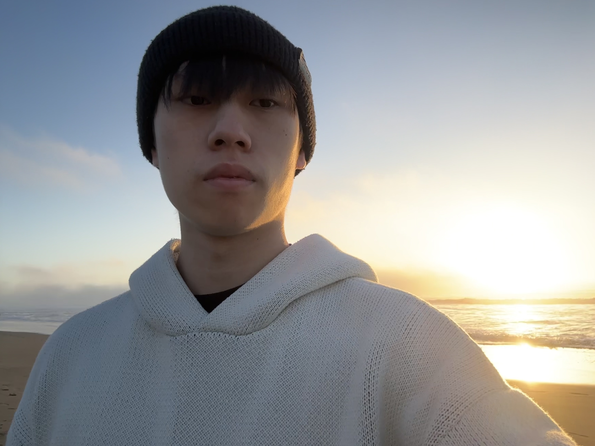
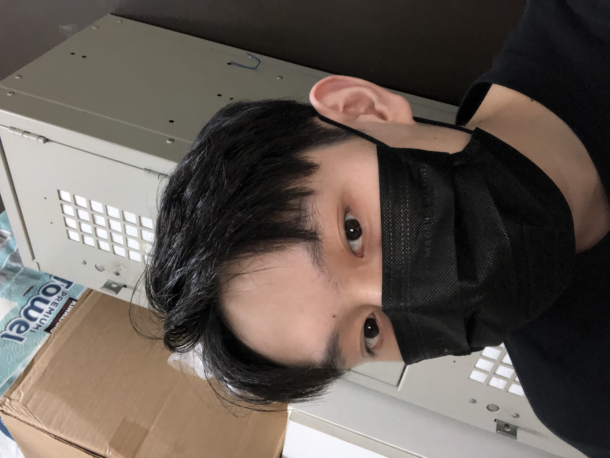
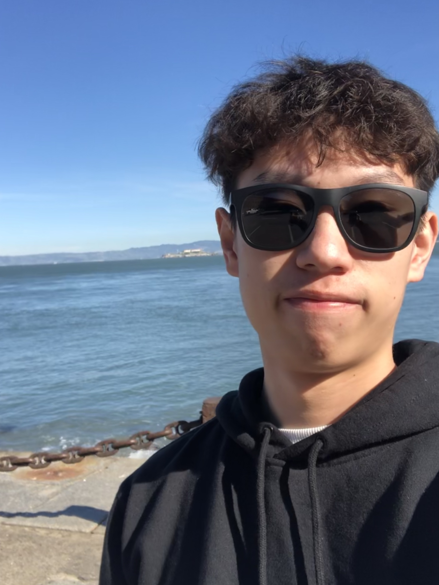

Introduction about Me
Henry Yu Li
Hi! My name is Henry Yu Li. I am currently a student at SFSU. This is my second semester at SFSU, and I am majoring in Visual Communication Design. I am looking forward to learn more about design.
More about me
I choose design as major because I like drawing, watching anime, and play video games, since I was a kid. For this reason, I choose this major to explore design things I mention above. One fun fact about me is I could speak more than three languages. I could speak Chinese, English, and Spanish, since i was born in Colombia, and my parents are Chinese.
- 
- 
- 